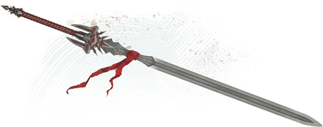

Тэйский меч
Thayan Sword
Оружие (Двуручный меч, Длинный меч или Скимитар), редкое (требуется настройка)

Рекомендованная стоимость 4 000 ЗМ
Тэйские мечи часто вручают лучшим тэйским рыцарям по завершении их обучения.
Вы получаете бонус +1 к броскам атаки и урона, совершаемым с этим магическим оружием.
Рыцарь тайной магии. Меч имеет 4 заряда и восстанавливает 1к4 потраченных заряда на каждом рассвете. Пока вы держите меч, вы можете потратить 1 заряд, чтобы сотворить одно из следующих заклинаний (Сл спасброска 15):
Несразимый воин. Если ваши Хиты падают до 0, но вы не умерли мгновенно, пока держите этот меч, вы можете вместо этого остаться с 1 Хитом. Как только вы использовали это свойство, вы не можете сделать это снова до следующего рассвета.